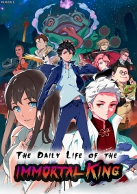
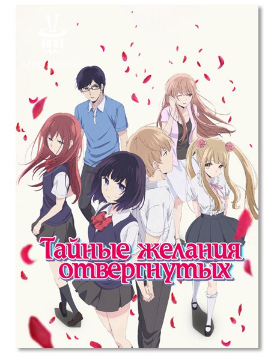
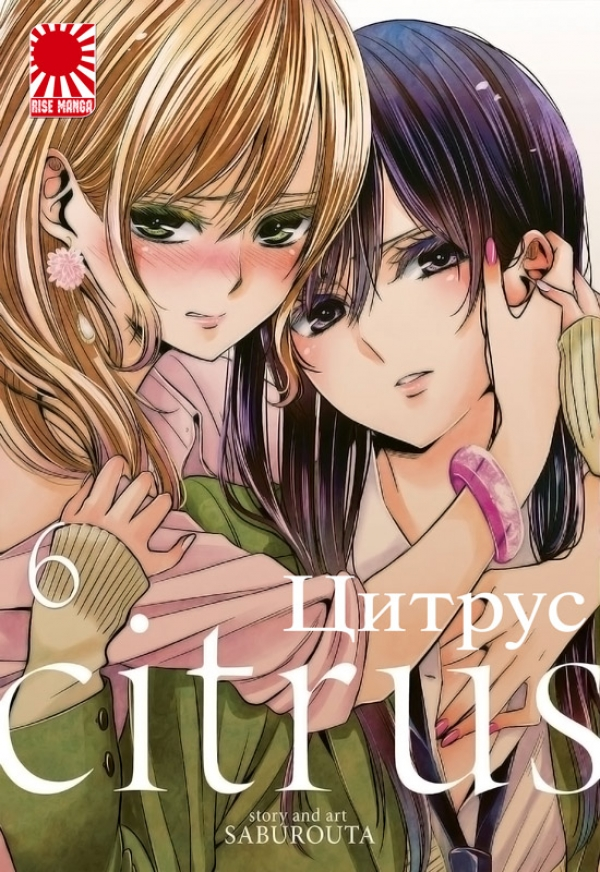

Немного о себе
19 лет, учусь на программиста. Хочу поделиться частичкой своей жизни с тобой, дорогой читатель. Здесь ты можешь найти интересные ранобэ или мангу, узнать немного обо мне. Если что-то замотивирует или заинтересует тебя, я буду счастлива.
Ранобэ
Ранобэ - это почти то же самое, что и обычные произведения, но в отличие от последних в них история зачастую разбита на большее количество глав и длится дольше. Книги разочаровывали меня своими концовками, поэтому я решила начать читать ранобэ. Но вот концовки ранобэ все такие же плохие, как и в книгах. Поэтому я приняла одно из важнейших решений в моей жизни! Я престала дочитывать книги до конца. Ведь, если не знаешь концовку, она тебя не разочарует, верно?
Читаю сейчас: Я действительно не сын пророка
Лучшее из прочитанного до конца:
- Бог преступности
- Поднятие уровня в одиночку
- Повседневная жизнь бессмертного короля 
Не читала чего-то достойного ТОП 3
Манга
Любимый жанр: Юри
НЕТ, ОНА ОБЯЗАТЕЛЬНА К ПРОЧТЕНИЮ
- В ловушке лжи
- Тайные желания отвергнутых 
- Цитрус 
- Вот почему все кончено
- Мир без свободы